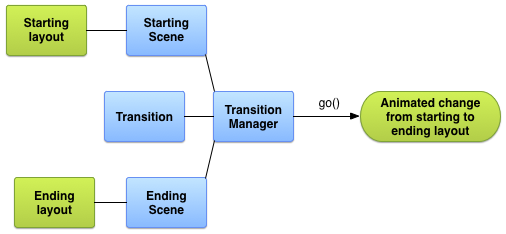

简介
Android 动画体系可分如下三种：
补间动画 -- 对 View 进行一系列的动画操作，包括淡入淡出、缩放、平移、旋转四种。
逐帧动画 -- 将一个完整的动画拆分成多张单独的图片，然后再将它们连贯起来进行播放，类似于动画片的工作原理。
属性动画 -- 通过改变任何一个对象的属性实现动画效果，API 11 添加。
另外，还有一种 转场动画，在 Android 4.4 就已经引入，但在 5.0 才得以真正的实现。
补间动画有两个缺陷：
补间动画只能对 View 设置动画，对非 View 的对象不能设置动画；
补间动画只是改变了 View 的显示效果而没有真正的改变 View 的属性。例如，我们想使用补间动画将一个按钮从一个位置移动到一个新的位置，那么当移动完成之后我们点击这个按钮，是不会触发其点击事件的，而当我们点击移动前的位置时，会触发其点击事件，即补间动画只是在另一个地方重新绘制了这个 View，其他的东西都没有改变。
Activity 跳转动画
Activity 的切换动画的两种场景：
当调用 startActivity 方法的时候启动一个新的 Activity，这时候就涉及到了旧的 Activity 的退出动画和新的 Activity 的显示动画；
当调用 finish 方法的时候，销毁当前 Acitivity，就涉及到了当前 Activity 的退出动画和前一个 Activity 的显示动画。
实现 Activity 跳转动画的五种方式: 参照此文
使用 overridePendingTransition 方法实现 Activity 跳转动画;
使用 style 的方式定义 Activity 的切换动画;
使用 ActivityOptions 切换动画实现 Activity 跳转动画;
使用 ActivityOptions 之后内置的动画效果通过 style 的方式;
使用 ActivityOptions 动画共享组件的方式实现跳转 Activity 动画.
Animation
java.lang.Object
android.view.animation.Animation
public abstract class Animation implements Cloneable {
// 动画监听器
public static interface AnimationListener {
void onAnimationStart(Animation animation);
void onAnimationEnd(Animation animation);
void onAnimationRepeat(Animation animation);
}
}
/** XML 属性 */
android:duration -- 动画时长
android:fillAfter -- 应用于 AnimationSet，动画完成后停留在最后一帧
android:fillBefore -- 应用于 AnimationSet，动画完成后停留在第一帧
android:fillEnabled -- 是否开启
android:interpolator -- 插值器
android:repeatCount -- 重复次数
android:repeatMode -- 重复模式，RESTART | REVERSE
android:startOffset -- 动画开始前延迟时长
android:zAdjustment -- 设置动画的内容运行时在 Z 轴上的位置(层):ZORDER_NORMAL:-0, ZORDER_TOP:1, ZORDER_BOTTOM: -1
android:detachWallpaper -- 窗口动画的特殊选项：如果这个窗口在墙纸的顶部，是否用它来装饰墙纸。
Animation API
Interpolator getInterpolator()-- 获取插入器void setInterpolator(Context context, int resID)-- 设置插入器void setInterpolator(Interpolator i)-- 设置插入器int getRepeatCount()-- 重复次数void setRepeatCount(int repeatCount)-- 设置重复次数void reset()-- 重置动画int getRepeatMode()-- 重复模式void setRepeatMode(int repeatMode)-- 设置重复模式void start()-- 启动动画void startNow()-- 立即启动动画void cancel()-- 取消动画boolean getFillAfter()-- 是否 fillAfterboolean getFillBefore()-- 是否 fillBeforeboolean isFillEnabled()-- 是否开启 Fillvoid setFillAfter(boolean fillAfter)-- 应用于 AnimationSet, 若为 true, 结束后停留最后一帧void setFillBefore(boolean fillBefore)-- 应用于 AnimationSet, 若为 true, 结束后停留第一帧void setFillEnabled(boolean fillEnabled)-- 开启 / 关闭 Fillboolean hasEnded()-- 是否已结束boolean hasStarted()-- 是否已开始void setAnimationListener(Animation.AnimationListener listener)-- 设置动画监听器void setDuration(long durationMillis)-- 设置时长long getDuration()-- 获取动画时长void scaleCurrentDuration(float scale)-- 比列更改动画时长(duration * scale)void restrictDuration(long durationMillis)-- 确保该动画将运行时间不超过指定的时间long computeDurationHint()-- 计算动画总时长，可能由多个动画同时执行，或者执行次数为多次long getStartOffset()-- 获取延迟时间void setStartOffset(long startOffset)-- 设置延迟时间long getStartTime()-- 获取开始时间，View 的setAnimation()方法void setStartTime(long startTimeMillis)-- 设置开始时间，View 的setAnimation()方法int getZAdjustment()-- 获取动画层次void setZAdjustment(int zAdjustment)-- 设置层次(ZORDER_TOP:0, ZORDER_NORMAL:1, ZORDER_BOTTOM:-1)int getBackgroundColor()-- 无效，获取背景void setBackgroundColor(int bg)-- 无效，设置背景boolean getDetachWallpaper()-- 获取选项void setDetachWallpaper(boolean detachWallpaper)-- 窗口动画的特殊选项：如果这个窗口在墙纸的顶部，是否用它来装饰墙纸。void initialize(int width, int height, int parentWidth, int parentHeight)-- 本身只调用 reset(), 将 initialized 设置为 true，看子类的实现boolean isInitialized()-- 是否已经初始化boolean getTransformation(long currentTime, Transformation outTransformation, float scale)-- 获取在指定时间点应用的转换boolean getTransformation(long currentTime, Transformation outTransformation)-- 获取在指定时间点应用的转换boolean willChangeBounds()-- 指示此动画是否会影响动画视图的边界boolean willChangeTransformationMatrix()-- 指示此动画是否会影响转换矩阵
Animation 子类
AlphaAnimation -- 透明动画，不会影响动画视图的边界和改变转换矩阵
/** AlphaAnimation 值得关注的只有两个属性： * fromAlpha -- 开始透明度 * toAlpha; -- 结束透明度 */ AlphaAnimation(float fromAlpha, float toAlpha) AlphaAnimation(Context context, AttributeSet attrs)
TranslateAnimation -- 移动动画
TranslateAnimation(Context context, AttributeSet attrs) /** 使用绝对位置指定动画开始和结束的位置 */ TranslateAnimation(float fromXDelta, float toXDelta, float fromYDelta, float toYDelta) /** 提供了参考点， Type 的类型有三种： * Animation.ABSOLUTE -- 默认，绝对位置，直接使用像素为单位 * Animation.RELATIVE_TO_SELF -- 相对自身, value 为一个比列值，如： fromX = width * fromXValue ... * Animation.RELATIVE_TO_PARENT -- 相对父布局, value 为一个比列值，如： fromX = parentWidth * xValue ... */ TranslateAnimation(int fromXType, float fromXValue, int toXType, float toXValue, int fromYType, float fromYValue, int toYType, float toYValue)RotateAnimation -- 旋转动画
/** Type 同 TranslateAnimation，指定角度和旋转中心点 */ RotateAnimation(float fromDegrees, float toDegrees) RotateAnimation(float fromDegrees, float toDegrees, float pivotX, float pivotY) RotateAnimation(float fromDegrees, float toDegrees, int pivotXType, float pivotXValue, int pivotYType, float pivotYValue)ScaleAnimation -- 缩放动画
/** Type 同 TranslateAnimation，指定缩放中心点和缩放因子 */ ScaleAnimation(Context context, AttributeSet attrs) ScaleAnimation(float fromX, float toX, float fromY, float toY) ScaleAnimation(float fromX, float toX, float fromY, float toY, float pivotX, float pivotY) ScaleAnimation(float fromX, float toX, float fromY, float toY, int pivotXType, float pivotXValue, int pivotYType, float pivotYValue)AnimationSet -- 组合动画，每个动画的变换被组合成一个单一的变换。
AnimationSet(Context context, AttributeSet attrs) /** 参数为是否所有动画共享一个插值器 */ AnimationSet(boolean shareInterpolator)
AnimationUtils
AnimationUtils 有一些静态方法，用来生成动画。
static Animation loadAnimation(Context context, int id)-- 从res/anim加载动画static Interpolator loadInterpolator(Context context, int id)-- 从res/interpolator加载插值器static LayoutAnimationController loadLayoutAnimation(Context context, int id)-- 从res/anim加载布局动画static Animation makeInAnimation(Context c, boolean fromLeft)-- 从com.android.internal.R.anim加载动画static Animation makeInChildBottomAnimation(Context c)-- 同上static Animation makeOutAnimation(Context c, boolean toRight)-- 同上static long currentAnimationTimeMillis()-- 这个时间应用于Animation.setStartTime(millis)
Interpolator 及子类
android.animation.TimeInterpolator
android.view.animation.Interpolator
android.view.animation.BaseInterpolator
AccelerateInterpolator PathInterpolator .....
public interface TimeInterpolator {
// 不断调用这个方法，来实现速度变化
float getInterpolation(float input);
}
Interpolator 用于控制动画的速度变化。只有一个方法，来自于: TimeInterpolator。直接来看其子类：
AccelerateInterpolator -- 加速
/** 加速速度和 factor 相关： * factor >= 1 时，值越大，加速越快； * 0 < factor < 1 时，实际为减速，值越小，减速越快。 */ AccelerateInterpolator() // factor = 1.0f AccelerateInterpolator(float factor) AccelerateInterpolator(Context context, AttributeSet attrs) public float getInterpolation(float input) { if (mFactor == 1.0f) { return input * input; } else { return (float)Math.pow(input, mDoubleFactor); // mDoubleFactor = 2 * mFactor; } }DecelerateInterpolator -- 减速
/** 减速速度和 factor 相关： * factor >= 1 时，值越大，减速越快； * 0 < factor < 1 时，实际为加速，值越小，加速越快。 */ DecelerateInterpolator() // factor = 1.0f DecelerateInterpolator(float factor) DecelerateInterpolator(Context context, AttributeSet attrs) public float getInterpolation(float input) { float result; if (mFactor == 1.0f) { result = (float)(1.0f - (1.0f - input) * (1.0f - input)); } else { result = (float)(1.0f - Math.pow((1.0f - input), 2 * mFactor)); } return result; }AccelerateDecelerateInterpolator -- 先加速，后加速
AccelerateDecelerateInterpolator() AccelerateDecelerateInterpolator(Context context, AttributeSet attrs) public float getInterpolation(float input) { return (float)(Math.cos((input + 1) * Math.PI) / 2.0f) + 0.5f; }AnticipateInterpolator -- 开始的时候向后，然后向前甩
AnticipateInterpolator() // tension = 2.0f AnticipateInterpolator(float tension) AnticipateInterpolator(Context context, AttributeSet attrs) public float getInterpolation(float t) { return t * t * ((mTension + 1) * t - mTension); }AnticipateOvershootInterpolator -- 开始的时候向后，然后向前甩一定值，再返回最后的值
AnticipateOvershootInterpolator() { mTension = 2.0f * 1.5f; } AnticipateOvershootInterpolator(float tension) { mTension = tension * 1.5f; } AnticipateOvershootInterpolator(float tension, float extraTension) { mTension = tension * extraTension; } AnticipateOvershootInterpolator(Context context, AttributeSet attrs) private static float a(float t, float s) { return t * t * ((s + 1) * t - s); } private static float o(float t, float s) { return t * t * ((s + 1) * t + s); } public float getInterpolation(float t) { if (t < 0.5f) return 0.5f * a(t * 2.0f, mTension); else return 0.5f * (o(t * 2.0f - 2.0f, mTension) + 2.0f); }BounceInterpolator -- 动画结束的时候弹起
BounceInterpolator() BounceInterpolator(Context context, AttributeSet attrs) private static float bounce(float t) { return t * t * 8.0f; } public float getInterpolation(float t) { t *= 1.1226f; if (t < 0.3535f) return bounce(t); else if (t < 0.7408f) return bounce(t - 0.54719f) + 0.7f; else if (t < 0.9644f) return bounce(t - 0.8526f) + 0.9f; else return bounce(t - 1.0435f) + 0.95f; }CycleInterpolator -- 动画循环播放特定的次数，速率改变沿着正弦曲线
CycleInterpolator(float cycles) CycleInterpolator(Context context, AttributeSet attrs) public float getInterpolation(float input) { return (float)(Math.sin(2 * mCycles * Math.PI * input)); }LinearInterpolator -- 以常量速率改变
LinearInterpolator() LinearInterpolator(Context context, AttributeSet attrs) public float getInterpolation(float input) { return input; }OvershootInterpolator -- 向前甩一定值后再回到原来位置
OvershootInterpolator() // tension = 2.0f OvershootInterpolator(float tension) OvershootInterpolator(Context context, AttributeSet attrs) public float getInterpolation(float t) { t -= 1.0f; return t * t * ((mTension + 1) * t + mTension) + 1.0f; }PathInterpolator -- 贝塞尔曲线控制速度，API 21 添加
PathInterpolator(Path path) PathInterpolator(float controlX, float controlY) // 一个控制点的贝塞尔曲线 // 两个控制点的贝塞尔曲线 PathInterpolator(float controlX1, float controlY1, float controlX2, float controlY2) PathInterpolator(Context context, AttributeSet attrs)
Transformation
java.lang.Object
android.view.animation.Transformation
public class Transformation {
protected Matrix mMatrix;
protected float mAlpha;
protected int mTransformationType;
}
Transformation 定义要在动画的某个时间点应用的转换。每个 Animation 的子类都重载了其 applyTransformation(float interpolatedTime, Transformation t) 方法，接收一个 Transformation 作为参数。
Transformation 有一个透明度变化的 mAlpha 和应用变化的 mMatrix 矩阵。
Matrix getMatrix()-- 获取变换矩阵float getAlpha()-- 获取透明度值void setAlpha(float alpha)-- 设置透明度值void set(Transformation t)-- 重置为 t 变换void setTransformationType(int type)-- 变换类型:TYPE_ALPHA,TYPE_IDENTITY,TYPE_MATRIX,TYPE_BOTHint getTransformationType()-- 获取变换类型void compose(Transformation t)-- 将此转换应用于现有的转换，例如将缩放效果应用于已经旋转的内容。void clear()-- 重置变换
LayoutAnimationController 及子类
java.lang.Object
android.view.animation.LayoutAnimationController
public class LayoutAnimationController {
protected Animation mAnimation;
protected Interpolator mInterpolator;
protected Random mRandomizer;
LayoutAnimationController(Context context, AttributeSet attrs) {}
LayoutAnimationController(Animation animation) {}
LayoutAnimationController(Animation animation, float delay) {}
public static class AnimationParameters {
public int count;// ViewGroup 中的 View 个数
public int index;// ViewGroup 中的 View 索引
}
}
/** XML 属性 */
android:animation // 动画的名称
android:animationOrder // 动画播放顺序
android:delay // 延迟时间
android:interpolator // 动画的插值，有加速，减速等
LayoutAnimationController 用于一个 ViewGroup 的动画控制器，它能够让每个子 View 在不同的时间点分别执行相同的动画，ViewGroup 通过 LayoutAnimationController 计算每个子 View 的动画开始的时间间隔，这个时间的间隔是通过某种规律特点进行计算，比如它在 ViewGroup 中的 index 顺序。
间隔时间的计算是通过 View 在 Viewgroup 的 index 顺序乘以单位时间间隔计算得出。它的子类应该重写：
long getDelayForView(View view)-- 实现一种不同的计算 delay 的延迟时间方式。例如子类: GridLayoutAnimationController，它基于 child view 的 column 和 row 值来计算延迟。
LayoutAnimationController 类中对应的播放顺序：
ORDER_NORMAL: 按照 View 添加到 ViewGroup 中的顺序进行播放动画展示;
ORDER_REVERSE: 按照 View 添加到 ViewGroup中倒叙进行播放动画展示;
ORDER_RANDOM: 随机顺序播放 View 的动画。
void setAnimation(Animation animation)-- 设置动画void setAnimation(Context context, int resourceID)-- 设置动画Animation getAnimation()-- 获取动画void setInterpolator(Context context, int resourceID)-- 设置动画速度控制器void setInterpolator(Interpolator interpolator)-- 设置动画速度控制器Interpolator getInterpolator()-- 获取动画速度控制器void setOrder(int order)-- 顺序：ORDER_NORMAL,ORDER_REVERSE,ORDER_RANDOMint getOrder()-- 获取顺序void start()-- 开始，应该使用：layout.startLayoutAnimation()boolean isDone()-- 是否完成void setDelay(float delay)-- 设置延时float getDelay()-- 获取延时final Animation getAnimationForView(View view)-- 从 View 中获取动画boolean willOverlap()-- 指示子 View 的动画是否会重叠
I. 子 View 顺序飞入效果:
/** 实现思路：
* 1. 先把展开后样式布局好，然后隐藏；
* 2. 点击按钮时，先设置布局可见，然后开启动画；
* 注意：退出时，不用设置 layout 为不可见，
* 因为 Animation.fillBefore 为 true；
* !!!问题：右下角按钮为 ImageButton 可行，为 ImageView 就是不行，未找到原因!!!
*/
if(visiable) { // 标识是否可见
layout.setVisibility(View.VISIBLE)
Animation animation = AnimationUtils.loadAnimation(getApplication(),
R.anim.botton_out); // translate 动画
LayoutAnimationController c = new LayoutAnimationController(animation);
layout.setLayoutAnimation(c);
content.startLayoutAnimation();
visiable = false;
} else {
Animation animation = AnimationUtils.loadAnimation(getApplication(),
R.anim.botton_out); // translate 动画
// 创建一个 LayoutAnimationController 对象
LayoutAnimationController controller = new LayoutAnimationController(animation);
// 设置 Order 顺序
controller.setOrder(LayoutAnimationController.ORDER_REVERSE);
// 将 controller 赋值给 ViewGroup
content.setLayoutAnimation(controller);
// 开启动画
content.startLayoutAnimation();
visiable = true;
}
II. ListView 的 Item 飞入效果:
String[] datas = {"item 1", "item 2", "item 3", "item 4", "item 5"};
ListView listView = (ListView) findViewById(R.id.listView);
listView.setAdapter(new ArrayAdapter<String>(this,
android.R.layout.simple_expandable_list_item_1, datas));
AnimationUtils.loadAnimation(getApplication(), R.anim.right_in)
LayoutAnimationController controller = new LayoutAnimationController();
listView.setLayoutAnimation(controller);
listView.startLayoutAnimation();
III. GridView 动画效果:
子类 GridLayoutAnimationController 专门为 GridView 的加载动画。
/** XML 属性 */
android:columnDelay -- 列延迟
android:direction -- 方向
android:directionPriority -- 方向优先级
android:rowDelay -- 行延迟
/** 可以同时设置多个方向进行操作 */
DIRECTION_LEFT_TO_RIGHT -- 从左到右
DIRECTION_RIGHT_TO_LEFT -- 从右到左
DIRECTION_TOP_TO_BOTTOM -- 从上到下
DIRECTION_BOTTOM_TO_TOP -- 从下到上
DIRECTION_HORIZONTAL_MASK -- 水平方向
DIRECTION_VERTICAL_MASK -- 竖直方向
/** 行列优先级, 调用此方法: setDirectionPriority(int directionPriority) */
PRIORITY_NONE -- 行列同级，默认值
PRIORITY_COLUMN -- 列优先
PRIORITY_ROW -- 行优先
/** 实例: */
String[] datas = {
"item 1", "item 2", "item 3",
"item 4", "item 5", "item 6",
"item 7", "item 8", "item 9",
"item 10", "item 11", "item 12",
};
GridView gridView = (GridView) findViewById(R.id.gridView);
gridView.setAdapter(new ArrayAdapter<String>(this,
android.R.layout.simple_expandable_list_item_1, datas));
GridLayoutAnimationController c = new GridLayoutAnimationController(
AnimationUtils.loadAnimation(getApplication(), R.anim.bottom_in));
// 设置动画播放顺序
c.setOrder(LayoutAnimationController.ORDER_NORMAL);
// 设置动画播放方向
c.setDirection(GridLayoutAnimationController.DIRECTION_LEFT_TO_RIGHT);
// 设置动画播放顺序的优先级
c.setDirectionPriority(GridLayoutAnimationController.PRIORITY_NONE);
gridView.setLayoutAnimation(controller);
gridView.startLayoutAnimation();
IV. 自定义 LayoutAnimationController:
<scale
xmlns:android="http://schemas.android.com/apk/res/android"
android:duration="100"
android:fromXScale="0"
android:toXScale="1"
android:fromYScale="0"
android:toYScale="1"
android:fillAfter="true"
android:pivotX="50%"
android:pivotY="50%" />
public class MyLayoutAnimationController extends LayoutAnimationController {
public static final int ORDER_CUSTOM = 6;
public MyLayoutAnimationController(Animation anim) {
super(anim);
}
public MyLayoutAnimationController(Animation anim, float delay) {
super(anim, delay);
}
public MyLayoutAnimationController(Context context, AttributeSet attrs) {
super(context, attrs);
}
protected int getTransformedIndex(AnimationParameters params) {
if(getOrder() == ORDER_CUSTOM){//view顺序以1开头
if(params.index == 2) return 4;
else if(params.index == 3) return 5;
else if(params.index == 4) return 2;
else if(params.index == 5) return 6;
else if(params.index == 6) return 3;
else return params.index;
} else {
return super.getTransformedIndex(params);
}
}
}
AnimationDrawable
AnimationDrawable 实现了 Android 的逐帧动画，请查看：DRAWABLE
<?xml version="1.0" encoding="utf-8"?>
<animation-list android:id="@+id/selected" android:oneshot="false">
<item android:drawable="@drawable/wheel0" android:duration="50" />
<item android:drawable="@drawable/wheel1" android:duration="50" />
<item android:drawable="@drawable/wheel2" android:duration="50" />
<item android:drawable="@drawable/wheel3" android:duration="50" />
<item android:drawable="@drawable/wheel4" android:duration="50" />
<item android:drawable="@drawable/wheel5" android:duration="50" />
</animation-list>
Animator
java.lang.Object
android.animation.Animator
├── AnimatorSet
└── ValueAnimator
├── ObjectAnimator
└──TimeAnimator
public abstract class Animator implements Cloneable {
/** 动画监听器，AnimatorListenerAdapter 实现了此接口，可以只监听感兴趣的状态 */
public static interface AnimatorListener {
void onAnimationCancel(Animator animation);
void onAnimationEnd(Animator animation);
void onAnimationRepeat(Animator animation);
void onAnimationStart(Animator animation);
}
/** 暂停/恢复监听器，AnimatorListenerAdapter 实现了此接口，可以只监听感兴趣的状态 */
public static interface AnimatorPauseListener {
void onAnimationPause(Animator animation);
void onAnimationResume(Animator animation);
}
}
Animator 属性动画，在属性动画中，我们不仅可以像补间动画那样设置控件的透明度、缩放、平移或旋转的动画，还可以做到将这些动画联合起来播放、将一组动画按顺序播放、控制动画的播放速度，甚至可以对非 View 设置动画等等。
Animator API:
void addListener(Animator.AnimatorListener listener)-- 添加动画监听器，AnimatorListenerAdapter实现了此接口，可以只监听感兴趣的状态。void removeListener(Animator.AnimatorListener listener)-- 移除监听器ArrayList<Animator.AnimatorListener> getListeners()-- 获取所有监听器void removeAllListeners()-- 移除所有监听器void addPauseListener(Animator.AnimatorPauseListener listener)-- 添加停/恢复监听器，AnimatorListenerAdapter实现了此接口，可以只监听感兴趣的状态。void removePauseListener(Animator.AnimatorPauseListener listener)-- 移除停/恢复监听器abstract Animator setDuration(long duration)-- 设置动画时长abstract long getDuration()-- 获取动画时长long getTotalDuration()-- 动画总时长abstract void setStartDelay(long startDelay)-- 设置延时abstract long getStartDelay()-- 获取延时时间abstract void setInterpolator(TimeInterpolator value)-- 设置插值器TimeInterpolator getInterpolator()-- 获取插值器void start()-- 开始动画void pause()-- 暂停动画void resume()-- 恢复动画void cancel()-- 取消动画void end()-- 结束动画boolean isPaused()-- 是否暂停abstract boolean isRunning()-- 是否正在运行boolean isStarted()-- 是否已经开始Animator clone()-- 复制动画，但不包括监听器void setTarget(Object target)-- 设置作用目标void setupEndValues()-- 告诉对象使用适当的信息提取动画的结束值void setupStartValues()-- 告诉对象使用适当的信息来提取动画的起始值
AnimatorInflater 用于将动画 XML 文件实例化为动画对象。
static Animator loadAnimator(Context context, int id)-- 从资源加载动画static StateListAnimator loadStateListAnimator(Context context, int id)-- 从资源加载状态动画
AnimatorSet
java.lang.Object
android.animation.Animator
android.animation.AnimatorSet
public final class AnimatorSet extends Animator {
public AnimatorSet() {}
public class Builder {
AnimatorSet.Builder after(long delay) {}
AnimatorSet.Builder after(Animator anim) {}
AnimatorSet.Builder before(Animator anim) {}
AnimatorSet.Builder with(Animator anim) {}
}
}
AnimatorSet 以指定的顺序播放一组动画对象。
void playSequentially(List<Animator> items)-- 顺序播放void playSequentially(Animator... items)-- 顺序播放void playTogether(Collection<Animator> items)-- 同时播放void playTogether(Animator... items)-- 同时播放void start()-- 开始所有动画void pause()-- 挂起所有动画void resume()-- 恢复所有动画void cancel()-- 取消所有动画void end()-- 结束所有动画boolean isRunning()-- 是否处于运行状态boolean isStarted()-- 是否开始long getDuration()-- 动画时长AnimatorSet setDuration(long duration)-- 设置时长TimeInterpolator getInterpolator()-- 获取插值器void setInterpolator(TimeInterpolator interpolator)-- 设置插值器long getStartDelay()-- 获取延时时间void setStartDelay(long startDelay)-- 设置延时long getTotalDuration()-- 动画总时长ArrayList<Animator> getChildAnimations()-- 获取所有子动画void setTarget(Object target)-- 设置作用目标void setupEndValues()-- 诉对象使用适当的信息提取动画的结束值void setupStartValues()-- 告诉对象使用适当的信息来提取动画的起始值AnimatorSet clone()-- 复制AnimatorSet.Builder play(Animator anim)-- 返回 Builder，动画不为空：new Builder(anim)AnimatorSet s = new AnimatorSet(); s.play(anim1).with(anim2); s.play(anim2).before(anim3); s.play(anim4).after(anim3); s.start();
ValueAnimator
java.lang.Object
android.animation.Animator
android.animation.ValueAnimator
public class ValueAnimator extends Animator implements AnimationHandler.AnimationFrameCallback {
// 动画更新回调
public static interface AnimatorUpdateListener {
void onAnimationUpdate(ValueAnimator animation);
}
}
ValueAnimator 提供了一个运行动画的简单时间引擎，它计算动画值并将其设置在目标对象上。
默认情况下，ValueAnimator 采用非线性时域插值，通过 AccelerateDecelerateInterpolator 类，加速和减速的动画。动画可以从代码或资源文件中创建，位置为: res/animator/。
<animator xmlns:android="http://schemas.android.com/apk/res/android"
android:duration="1000"
android:valueFrom="1"
android:valueTo="0"
android:valueType="floatType"
android:repeatCount="1"
android:repeatMode="reverse"/>
ValueAnimator 是整个属性动画最核心的类，ObjectAnimator 类就是 ValueAnimator 类的一个子类。属性动画的原理就是通过不断改变对象的属性值来实现过渡的，而这种过渡就是通过 ValueAnimator 类来负责计算的。除此之外，ValueAnimator 还负责管理动画的播放次数、播放模式和动画监听等。
ValueAnimator 的使用方法和 ObjectAnimator 的使用方法基本类似，不同的是 ValueAnimator 中不能指定运行动画的对象，因此 ValueAnimator 往往需要设置一个动画监听，通过不断监听当前动画运行到的属性值来动态的进行处理。代码如下：
ValueAnimator animator = ValueAnimator.ofInt(0, 100); // 产生一个从 0 到 100 变化的整数的动画
animator.setDuration(2000);
animator.addUpdateListener(new ValueAnimator.AnimatorUpdateListener() {
@Override
public void onAnimationUpdate(ValueAnimator animation) {
Integer value = (Integer) animation.getAnimatedValue(); // 动态的获取当前运行到的属性值
((Button) view).setText(value + "");
}
});
animator.start(); // 开始播放动画
static ValueAnimator ofInt(int... values)-- 生成一个指定开始和结束值的 ValueAnimator，一般使用两个参数static ValueAnimator ofFloat(float... values)-- 生成一个指定开始和结束值的 ValueAnimatorstatic ValueAnimator ofArgb(int... values)-- 生成一个指定开始和结束值的 ValueAnimatorstatic ValueAnimator ofObject(TypeEvaluator evaluator, Object... values)-- 使用自定也的 TypeEvaluatorstatic ValueAnimator ofPropertyValuesHolder(PropertyValuesHolder... values)-- 直接使用 PropertyValuesHolderstatic void setFrameDelay(long frameDelay)-- 设置每个帧之间的时间static long getFrameDelay()-- 获取每个帧之间的时间void setFloatValues(float... values)-- 指定开始和结束值void setIntValues(int... values)-- 指定开始和结束值void setObjectValues(Object... values)-- 指定开始和结束值void setValues(PropertyValuesHolder... values)-- 指定 PropertyValuesHoldervoid addUpdateListener(ValueAnimator.AnimatorUpdateListener listener)-- 添加动画监听器void removeUpdateListener(ValueAnimator.AnimatorUpdateListener listener)-- 移除指定监听器void removeAllUpdateListeners()-- 移除所有监听器float getAnimatedFraction()-- 获取当前分量void setCurrentFraction(float fraction)-- 设置当前分量，属性值会被设置为当前分量上的值Object getAnimatedValue()-- 获取当前值Object getAnimatedValue(String propertyName)-- 获取当前指定属性上的值long getCurrentPlayTime()-- 获取当前播放时间void setCurrentPlayTime(long playTime)-- 设置当前播放时间int getRepeatCount()-- 获取重复次数void setRepeatCount(int value)-- 设置重复次数int getRepeatMode()-- 获取重复模式void setRepeatMode(int value)-- 重复模式：RESTART,REVERSEvoid reverse()-- 反转动画void setEvaluator(TypeEvaluator value)-- 设置动画值使用的类型计算器
PropertyValuesHolder
java.lang.Object
android.animation.PropertyValuesHolder
public class PropertyValuesHolder implements Cloneable {
/** 这几个类为其 */
static class IntPropertyValuesHolder extends PropertyValuesHolder {}
static class FloatPropertyValuesHolder extends PropertyValuesHolder {}
static class MultiIntValuesHolder extends PropertyValuesHolder {}
static class MultiFloatValuesHolder extends PropertyValuesHolder {}
public static class PropertyValues {}
}
PropertyValuesHolder 是用来保存某个属性 property 对应的一组值，这些值对应了一个动画周期中的所有关键帧。
动画说到底是由动画帧组成的，Animator 可以设定并保存整个动画周期中的关键帧，然后根据这些关键帧计算出动画周期中任一时间点对应的动画帧的动画数据，而每一帧的动画数据里都包含了一个时间点属性 fraction 以及一个动画值 mValue，从而实现根据当前的时间点计算当前的动画值，然后用这个动画值去更新 property 对应的属性，这也是为什么 Animator 被称为属性动画的原因，因为它的整个动画过程实际上就是不断计算并更新对象的属性。
PropertyValuesHolder 由 Property 及 Keyframes 组成，其中 Property 用于描述属性的特征：如属性名以及属性类型，并提供 set 及 get 方法用于获取及设定给定 Target 的对应属性值；Keyframes 由一组关键帧 Keyframe 组成，每一个关键帧由 fraction 及 value 来定量描述，
于是 Keyframes 可以根据给定的 fraction 定位到两个关键帧，这两个关键帧的 fraction 组成的区间包含给定的 fraction，然后根据定位到的两个关键帧以及设定插间器及求值器就可以计算出给定 fraction 对应的 value。
于是，
PropertyValuesHolder 的整个工作流程也就呼之欲出了，首先通过 setObjectValues 等函数来初始化关键帧组 mKeyframes，必要的情况下（如: ObjectAnimator）可以通过
setStartValue 及 setEndValue 来设定第一帧及最末帧的 value，以上工作只是完成了 PropertyValuesHolder 的初始化，之后就可以由 Animator 在绘制动画帧的时候通过 fraction 来调用 calculateValue 计算该 fraction 对应的 value（实际上是由 mKeyframes 的 getValue 方法做出最终计算），
获得对应的 value 之后，一方面可以通过 getAnimatedValue 提供给 Animator 使用，另一方面也可以通过 setAnimatedValue 方法直接将该值设定到相应 Target 中去，这样 PropertyValuesHolder 的职责也就完成了。
PropertyValuesHolder API:
注意： 如果下面的可变长参数的只有一个值，这个值将作为结束值，而不是开始值。比如：
/** 这个动画的运行为：
* translationX -- X 轴由 0f 在 2 秒内移动到 200f(不是一直保持在 200f);
* translationY -- Y 轴由 0f 在 2 秒内先移动到 100f, 再回到 0f;
* translationY -- Y 轴由 0f 在 2 秒内先缩放 0.5f, 再回到 0f;
* alpha -- 由 1f 在 2 秒内透明度变为 0.8f, 再回到 1f;
*/
ObjectAnimator mObjectAnimator = ObjectAnimator.ofPropertyValuesHolder(image,
PropertyValuesHolder.ofFloat("translationX", 200f),
PropertyValuesHolder.ofFloat("translationY", 0f, 100f, 0f),
PropertyValuesHolder.ofFloat("alpha", 1f, 0.8f, 1f));
mObjectAnimator.setDuration(2000);
mObjectAnimator.start();
static PropertyValuesHolder ofInt(String propertyName, int... values)-- 属性名和 int 值构造static PropertyValuesHolder ofFloat(String propertyName, float... values)-- 属性名和 float 值构造static PropertyValuesHolder ofKeyframe(String propertyName, Keyframe... values)-- 属性名和 Keyframe 值构造static PropertyValuesHolder ofObject(String propertyName, TypeEvaluator evaluator, Object... values)-- 属性名和自定义对象构造，需要指定对象的变换计算方法Person p1 = new Person("001", "aaa", 0); Person p2 = new Person("002", "bbb", 80); Person p3 = new Person("003", "ccc", 0); PropertyValuesHolder holder = PropertyValuesHolder.ofObject("translationX", new TypeEvaluator<Person>() { @Override public Person evaluate(float fraction, Person startValue, Person endValue) { Person p = new Person(); // 下面两行为 IntEvaluate 的代码 int startInt = startValue.age; p.age = (int)(startInt + fraction * (endValue.age - startInt)); return p; } }, p1, p2, p3); /** 必须设置一个转换器 */ holder.setConverter(new TypeConverter<Person, Integer>(Person.class, Integer.class) { @Override public Integer convert(Person value) { return value.age; } }); mObjectAnimator = ObjectAnimator.ofPropertyValuesHolder(image, holder); mObjectAnimator.setDuration(3000); mObjectAnimator.start();static PropertyValuesHolder ofInt(Property<?, Integer> property, int... values)--?属性作用对象的类型，如果要让 ImageView 移动，操作的是setTranslateX()方法，这个方法是 View 类的，那么这个? == Viewstatic PropertyValuesHolder ofFloat(Property<?, Float> property, float... values)-- 同上/p>static PropertyValuesHolder ofKeyframe(Property property, Keyframe... values)-- 参见下面的 KeyFrame 类static <V> PropertyValuesHolder ofObject(Property property, TypeEvaluator<V> evaluator, V... values)-- 见下面的实例static <T, V> PropertyValuesHolder ofObject(Property<?, V> property, TypeConverter<T, V> converter, TypeEvaluator<T> evaluator, T... values)-- 见下面的实例:Person p1 = new Person("001", "aaa", 0); Person p2 = new Person("002", "bbb", 200); Person p3 = new Person("003", "ccc", 0); Property<View, Integer> property = new Property<View, Integer>(Integer.class, "translationX") { @Override public void set(View object, Integer value) { object.setTranslationX(value); } @Override public Integer get(View object) { return (int)object.getTranslationX(); } }; TypeConverter<Person, Integer> cvt = new TypeConverter<Person, Integer>(Person.class, Integer.class) { @Override public Integer convert(Person value) { return value.age; } }; TypeEvaluator<Person> evaluator = new TypeEvaluator<Person>() { @Override public Person evaluate(float fraction, Person startValue, Person endValue) { Person p = new Person(); int startInt = startValue.age; p.age = (int)(startInt + fraction * (endValue.age - startInt)); return p; } }; PropertyValuesHolder holder = PropertyValuesHolder.ofObject(property, cvt, evaluator, p1, p2, p3); mObjectAnimator = ObjectAnimator.ofPropertyValuesHolder(image, holder); mObjectAnimator.setDuration(3000); mObjectAnimator.start();static PropertyValuesHolder ofMultiInt(String propertyName, int[][] values)-- propertyName 类型为 int[][] 数组static PropertyValuesHolder ofMultiFloat(String propertyName, float[][] values)-- propertyName 类型为 float[][] 数组/** 产生一个多维度同时变换的 PropertyValuesHolder */ float[][] arr = {{0, 0}, {300, 100}, {500, 0}, {0, 0}}; PropertyValuesHolder holder = PropertyValuesHolder.ofMultiFloat("move", arr); mValueAnimator = ValueAnimator.ofPropertyValuesHolder(holder); mValueAnimator.addUpdateListener(new ValueAnimator.AnimatorUpdateListener() { @Override public void onAnimationUpdate(ValueAnimator animation) { float[] arr = (float[]) animation.getAnimatedValue(); image.setTranslationX(arr[0]); // arr 数组的第一维： 0 - 300 - 500 - 0 image.setTranslationY(arr[1]); // arr 数组的第二维： 0 - 100 - 0 - 0 } }); mValueAnimator.setDuration(3000); mValueAnimator.start();static PropertyValuesHolder ofMultiInt(String propertyName, Path path)-- 参见下面的实例static PropertyValuesHolder ofMultiFloat(String propertyName, Path path)-- 参见下面的实例static PropertyValuesHolder ofObject(String propertyName, TypeConverter<PointF, ?> converter, Path path)-- 参见下面的实例static <V> PropertyValuesHolder ofObject(Property<?, V> property, TypeConverter<PointF, V> converter, Path path)-- 参见下面的实例/** Path 不能使用 add... 方法，因为没有起点和终点 */ Path path = new Path(); path.quadTo(200,400, 600, 200); path.close(); path.rLineTo(600, 0); path.rLineTo(0, 400); path.close(); PropertyValuesHolder holder = PropertyValuesHolder.ofMultiFloat("path", path); mObjectAnimator = ValueAnimator.ofPropertyValuesHolder(holder); mObjectAnimator.addUpdateListener(new ValueAnimator.AnimatorUpdateListener() { @Override public void onAnimationUpdate(ValueAnimator animation) { float[] arr = (float[]) animation.getAnimatedValue(); // 不断返回路径上的坐标 image.setTranslationX(arr[0]); image.setTranslationY(arr[1]); } }); mObjectAnimator.setDuration(6000); mObjectAnimator.start();static <T> PropertyValuesHolder ofMultiFloat(String propertyName, TypeConverter<T, float[]> converter, TypeEvaluator<T> evaluator, Keyframe... values)-- Keyframe 类型static <T> PropertyValuesHolder ofMultiInt(String propertyName, TypeConverter<T, int[]> converter, TypeEvaluator<T> evaluator, Keyframe... values)-- Keyframe 类型static <V> PropertyValuesHolder ofMultiFloat(String propertyName, TypeConverter<V, float[]> converter, TypeEvaluator<V> evaluator, V... values)-- 自定义类型static <V> PropertyValuesHolder ofMultiInt(String propertyName, TypeConverter<V, int[]> converter, TypeEvaluator<V> evaluator, V... values)-- 自定义类型void setFloatValues(float... values)-- 设置 float 值void setIntValues(int... values)-- 设置 int 值void setKeyframes(Keyframe... values)-- 设置 Keyframe 值void setObjectValues(Object... values)-- 设置 Object 值void setConverter(TypeConverter converter)-- 设置转换器void setEvaluator(TypeEvaluator evaluator)-- 设置计算方法void setProperty(Property property)-- 设置属性void setPropertyName(String propertyName)-- 设置属性名String getPropertyName()-- 获取属性名PropertyValuesHolder clone()-- 复制
PropertyValuesHolder 相关类：
Keyframe -- 保存一个 时间点/值 对。
/** float 类型的 mFraction 表示时间，每个 Value 类型为其 Class * float mFraction; // 时间点 * Class mValueType; // 值类型 * abstract Object getValue() / setValue(Object value); // 值由其子类实现 * 定义了三个默认保护静态内部类(自身的子类)： */ static class IntKeyframe extends Keyframe {...} static class FloatKeyframe extends Keyframe {...} static class ObjectKeyframe extends Keyframe {...} /** 提供了静态方法用于构造： */ static Keyframe ofFloat(float fraction); static Keyframe ofFloat(float fraction, float value); static Keyframe ofInt(float fraction, int value); static Keyframe ofInt(float fraction); static Keyframe ofObject(float fraction, Object value); static Keyframe ofObject(float fraction);Property -- 用于描述属性的特征,如:属性名以及属性类型，并提供 set 及 get 方法用于获取及设定给定 Target 的对应属性值。
TypeConverter -- 抽象基类，用于将转换类型 T 到另一类型 V，当动画中的值类型与属性类型不同时，这是必要的。
public TypeConverter(Class<T> fromClass, Class<V> toClass) {} /** 只有一个抽象方法 */ abstract V convert(T value) {} /** 有一个子类: BidirectionalTypeConverter */ abstract T convertBack(V value) {} BidirectionalTypeConverter<V, T> invert() {}
ObjectAnimator
java.lang.Object
android.animation.Animator
android.animation.ValueAnimator
android.animation.ObjectAnimator
public final class ObjectAnimator extends ValueAnimator {}
ObjectAnimator 为 ValueAnimator 的子类，它能直接绑定一个 Object，并通过反射修改绑定对象的属性。
ObjectAnimator API:
static ObjectAnimator ofInt(Object target, String propertyName, int... values)-- 参照 PropertyValuesHolderstatic ObjectAnimator ofFloat(Object target, String propertyName, float... values)-- 参照 PropertyValuesHolderstatic ObjectAnimator ofArgb(Object target, String propertyName, int... values)-- 调用ofInt, 但是使用的为: ArgbEvaluatorstatic <T> ObjectAnimator ofArgb(T target, Property<T, Integer> property, int... values)-- 同上，自定义Propertystatic ObjectAnimator ofFloat(Object target, String xPropertyName, String yPropertyName, Path path)-- 将Path上的 x 应用到xPropertyName, y 应用到yPropertyName,static ObjectAnimator ofInt(Object target, String xPropertyName, String yPropertyName, Path path)-- 同上static <T> ObjectAnimator ofFloat(T target, Property<T, Float> xProperty, Property<T, Float> yProperty, Path path)-- 参少上面static <T> ObjectAnimator ofInt(T target, Property<T, Integer> xProperty, Property<T, Integer> yProperty, Path path)-- 参少上面static <T> ObjectAnimator ofFloat(T target, Property<T, Float> property, float... values)-- 参照 PropertyValuesHolderstatic <T> ObjectAnimator ofInt(T target, Property<T, Integer> property, int... values)-- 参照 PropertyValuesHolderstatic ObjectAnimator ofMultiFloat(Object target, String propertyName, float[][] values)-- 参照 PropertyValuesHolderstatic ObjectAnimator ofMultiFloat(Object target, String propertyName, Path path)-- 参照 PropertyValuesHolderstatic <T> ObjectAnimator ofMultiFloat(Object target, String propertyName, TypeConverter<T, float[]> converter, TypeEvaluator<T> evaluator, T... values)-- 参照 PropertyValuesHolderstatic ObjectAnimator ofMultiInt(Object target, String propertyName, int[][] values)-- 参照 PropertyValuesHolderstatic ObjectAnimator ofMultiInt(Object target, String propertyName, Path path)-- 参照 PropertyValuesHolderstatic <T> ObjectAnimator ofMultiInt(Object target, String propertyName, TypeConverter<T, int[]> converter, TypeEvaluator<T> evaluator, T... values)-- 参照 PropertyValuesHolderstatic <T, V> ObjectAnimator ofObject(T target, Property<T, V> property, TypeEvaluator<V> evaluator, V... values)-- 参照 PropertyValuesHolderstatic ObjectAnimator ofObject(Object target, String propertyName, TypeConverter<PointF, ?> converter, Path path)-- 参照 PropertyValuesHolderstatic <T, V> ObjectAnimator ofObject(T target, Property<T, V> property, TypeConverter<PointF, V> converter, Path path)-- 参照 PropertyValuesHolderstatic <T, V, P> ObjectAnimator ofObject(T target, Property<T, P> property, TypeConverter<V, P> converter, TypeEvaluator<V> evaluator, V... values)-- 参照 PropertyValuesHolderstatic ObjectAnimator ofObject(Object target, String propertyName, TypeEvaluator evaluator, Object... values)-- 参照 PropertyValuesHolderstatic ObjectAnimator ofPropertyValuesHolder(Object target, PropertyValuesHolder... values)-- 参照ValueAnimatorvoid setProperty(Property property)-- 参照 PropertyValuesHoldervoid setPropertyName(String propertyName)-- 参照 PropertyValuesHolderString getPropertyName()-- 参照 PropertyValuesHoldervoid setTarget(Object target)-- 设置作用目标Object getTarget()-- 获取作用目标void setAutoCancel(boolean cancel)-- 其他具有相同的目标和属性的任何其他 Objectanimator 开始时，是否自动取消本身
TimeAnimator
java.lang.Object
android.animation.Animator
android.animation.ValueAnimator
android.animation.TimeAnimator
public class TimeAnimator extends ValueAnimator {
public TimeAnimator() {}
public static interface TimeListener {
/** animation -- 发出通知的动画
* totalTime -- 动画开始以来的总时间
* deltaTime -- 从前一帧到现在的运行时间
*/
void onTimeUpdate(TimeAnimator animation, long totalTime, long deltaTime);
}
}
TimeAnimator 提供了一个简单的回调机制，通过 TimeAnimator.TimeListener，在动画的每一帧处通知你。
void setCurrentPlayTime(long playTime)-- 将动画的位置设置为指定的时间点void setTimeListener(TimeAnimator.TimeListener listener)-- 注册回调接口void start()-- 开始动画
TypeEvaluator
java.lang.Object
android.animation.TypeEvaluator
public interface TypeEvaluator<T> {
T evaluate(float fraction, T startValue, T endValue);
}
TypeEvaluator 允许开发人员在任意属性类型上创建动画，允许它们为那些未被动画系统自动理解和使用的类型提供定制的计算方法。
TypeEvaluator 实现类：
ArgbEvaluator -- 计算的十六进制值颜色属性的默认计算器
public Object evaluate(float fraction, Object startValue, Object endValue) { int startInt = (Integer) startValue; int startA = (startInt >> 24) & 0xff; int startR = (startInt >> 16) & 0xff; int startG = (startInt >> 8) & 0xff; int startB = startInt & 0xff; int endInt = (Integer) endValue; int endA = (endInt >> 24) & 0xff; int endR = (endInt >> 16) & 0xff; int endG = (endInt >> 8) & 0xff; int endB = endInt & 0xff; return (int)((startA + (int)(fraction * (endA - startA))) << 24) | (int)((startR + (int)(fraction * (endR - startR))) << 16) | (int)((startG + (int)(fraction * (endG - startG))) << 8) | (int)((startB + (int)(fraction * (endB - startB)))); }FloatEvaluator -- 计算 float 属性值的默认计算器。
public Float evaluate(float fraction, Number startValue, Number endValue) { float startFloat = startValue.floatValue(); return startFloat + fraction * (endValue.floatValue() - startFloat); }FloatArrayEvaluator -- 计算 float 数组属性值的默认计算器。
public float[] evaluate(float fraction, float[] startValue, float[] endValue) { float[] array = mArray; // mArray 为构造方法传入参数 if (array == null) { array = new float[startValue.length]; } for (int i = 0; i < array.length; i++) { float start = startValue[i]; float end = endValue[i]; array[i] = start + (fraction * (end - start)); } return array; }IntEvaluator -- 计算 int 属性值的默认计算器。
public Integer evaluate(float fraction, Integer startValue, Integer endValue) { int startInt = startValue; return (int)(startInt + fraction * (endValue - startInt)); }IntArrayEvaluator -- 计算 int 数组属性值的默认计算器。
public int[] evaluate(float fraction, int[] startValue, int[] endValue) { int[] array = mArray; // mArray 为构造方法传入参数 if (array == null) { array = new int[startValue.length]; } for (int i = 0; i < array.length; i++) { int start = startValue[i]; int end = endValue[i]; array[i] = (int) (start + (fraction * (end - start))); } return array; }PointFEvaluator -- 进行类型之间的插值 PointF 值计算器。
public PointF evaluate(float fraction, PointF startValue, PointF endValue) { float x = startValue.x + (fraction * (endValue.x - startValue.x)); float y = startValue.y + (fraction * (endValue.y - startValue.y)); if (mPoint != null) { // mPoint 为构造方法传入参数 mPoint.set(x, y); return mPoint; } else { return new PointF(x, y); } }RectEvaluator -- 进行类型之间的插值 Rect 值计算器。
public Rect evaluate(float fraction, Rect startValue, Rect endValue) { int left = startValue.left + (int) ((endValue.left - startValue.left) * fraction); int top = startValue.top + (int) ((endValue.top - startValue.top) * fraction); int right = startValue.right + (int) ((endValue.right - startValue.right) * fraction); int bottom = startValue.bottom + (int) ((endValue.bottom - startValue.bottom) * fraction); if (mRect == null) { // mRect 为构造方法传入参数 return new Rect(left, top, right, bottom); } else { mRect.set(left, top, right, bottom); return mRect; } }
LayoutTransition
java.lang.Object
android.animation.LayoutTransition
public class LayoutTransition {
/** transitionType: */
int APPEARING -- 容器中出现一个视图时的动画
int DISAPPEARING -- 容器中消失一个视图时的动画
int CHANGING -- 布局改变导致某个视图随之改变时的动画时的动画，例如调整大小，但不包括添加或者移除视图
int CHANGE_APPEARING -- 其他视图的出现导致某个视图改变时的动画
int CHANGE_DISAPPEARING -- 其他视图的消失导致某个视图改变时的动画
public LayoutTransition() {}
public interface TransitionListener {
void startTransition(LayoutTransition trans, ViewGroup container, View view, int transitionType);
void endTransition(LayoutTransition trans, ViewGroup container, View view, int transitionType);
}
}
LayoutTransition 和补间动画的 LayoutAnimationController 一样，用于一个 ViewGroup 的动画控制器。
只要在布局文件的 ViewGroup 中加上 android:animateLayoutChanges="true" 属性，就会有一个 渐入/渐出 的默认动画。比如：添加一个子 View 会出现渐入动画，移除一个子 View 会出现渐出动画，而周围的视图则会平滑地填充移除时的空隙。
LayoutTransition API:
void addChild(ViewGroup parent, View child)-- 添加一个 child 到 parent 中void removeChild(ViewGroup parent, View child)-- 从 parent 中移除一个 childvoid showChild(ViewGroup parent, View child)-- 显示 childvoid showChild(ViewGroup parent, View child, int oldVisibility)-- 显示 childvoid hideChild(ViewGroup parent, View child)-- 隐藏 childvoid hideChild(ViewGroup parent, View child, int newVisibility)-- 隐藏 childvoid addTransitionListener(LayoutTransition.TransitionListener listener)-- 添加监听器void removeTransitionListener(LayoutTransition.TransitionListener listener)-- 移除监听器List<LayoutTransition.TransitionListener> getTransitionListeners()-- 获取监听器列表void disableTransitionType(int transitionType)-- 关闭某种类型的动画void enableTransitionType(int transitionType)-- 开启某种类型的动画boolean isTransitionTypeEnabled(int transitionType)-- 获取指定类型的状态Animator getAnimator(int transitionType)-- 获取指定类型的动画void setAnimator(int transitionType, Animator animator)-- 设置指定类型的动画long getDuration(int transitionType)-- 获取动画时长void setDuration(int transitionType, long duration)-- 设置指定类型的动画时长void setDuration(long duration)-- 设置时长long getStartDelay(int transitionType)-- 获取指定类型的动画延迟void setStartDelay(int transitionType, long delay)-- 设置指定类型的动画延迟long getStagger(int transitionType)-- 获取在更改动画期间启动每个动画之间的延迟时间长度void setStagger(int transitionType, long duration)-- 设置在启动每个动画之间的延迟时间长度void setInterpolator(int transitionType, TimeInterpolator interpolator)-- 设置插值器TimeInterpolator getInterpolator(int transitionType)-- 获取插值器boolean isChangingLayout()-- 是否会改变布局boolean isRunning()-- 是否运行状态void setAnimateParentHierarchy(boolean animateParentHierarchy)-- 是否允许改变父级层次
属性动画实例
Java 代码实现补间动画的 平移，缩放，旋转，透明效果：
/** 1.Alpha */ Animator alpha = ObjectAnimator.ofFloat(image, "alpha", 1f, 0.2f, 1f).setDuration(3000); /** 2.Translate */ PropertyValuesHolder x_trans = PropertyValuesHolder.ofFloat("translationX", 0, 500, 0); PropertyValuesHolder y_trans = PropertyValuesHolder.ofFloat("translationY", 0, 100, 0); Animator translate = ObjectAnimator.ofPropertyValuesHolder(image, x_trans, y_trans).setDuration(3000); /** 3.Scale: 中心点缩放 */ PropertyValuesHolder x_scale = PropertyValuesHolder.ofFloat("scaleX", 1f, 0.5f, 1f); PropertyValuesHolder y_scale = PropertyValuesHolder.ofFloat("scaleY", 1f, 0.5f, 1f); Animator scale = ObjectAnimator.ofPropertyValuesHolder(image, x_scale, y_scale).setDuration(3000); /** 4.Ratotion: 中心点旋转 */ Animator rotation = ObjectAnimator.ofFloat(image, "rotation", 0, 60f, -60f, 30f, -30f, 0f) .setDuration(3000); /** 5.Scale: 定点缩放，在动画开始的时候设置为右上角，为了不影响后面的动画，在动画结束后还原为默认位置 */ Animator scale_xy = ObjectAnimator.ofPropertyValuesHolder(image, x_scale, y_scale).setDuration(3000); /** 获取 缩放/旋转 的参考点，默认为 View 的中心点 */ final float pivotX = image.getPivotX(); final float pivotY = image.getPivotY(); scale_xy.addListener(new AnimatorListenerAdapter() { @Override public void onAnimationStart(Animator animation) { super.onAnimationStart(animation); // 设置参考点为右上角 image.setPivotX(pivotX * 2); image.setPivotY(0); } @Override public void onAnimationEnd(Animator animation) { super.onAnimationEnd(animation); // 为了不影响后面的动画，还原为默认位置 image.setPivotX(pivotX); image.setPivotY(pivotY); } }); /** 6.Ratotion: X 轴旋转 */ Animator rotation_X = ObjectAnimator.ofFloat(image, "rotationX", 0, 60f, -60f, 0).setDuration(3000); /** 7.Ratotion: Y 轴旋转 */ Animator rotation_Y = ObjectAnimator.ofFloat(image, "rotationY", 0, 30f, -30f, 0).setDuration(3000); AnimatorSet mAnimatorSet = new AnimatorSet(); // 顺序播放 mAnimatorSet.playSequentially(alpha, translate, scale, rotation, scale_xy, rotation_X, rotation_Y); mAnimatorSet.start();XML 实现补间动画的 平移，缩放，旋转，透明效果：
<?xml version="1.0" encoding="utf-8"?> <set xmlns:android="http://schemas.android.com/apk/res/android" <!-- set 可嵌套 --> android:ordering="sequentially"> <!-- 顺序播放 --> <!-- Alpha --> <objectAnimator android:duration="3000"> <propertyValuesHolder android:propertyName="alpha"> <keyframe android:fraction="0" android:value="1" /> <keyframe android:fraction="0.5" android:value="0.2" /> <keyframe android:fraction="1" android:value="1" /> </propertyValuesHolder> </objectAnimator> <!-- Translate --> <objectAnimator android:duration="3000"> <propertyValuesHolder android:propertyName="x"> <keyframe android:fraction="0" android:value="0" /> <keyframe android:fraction="0.5" android:value="500" /> <keyframe android:fraction="1" android:value="0" /> </propertyValuesHolder> <propertyValuesHolder android:propertyName="y"> <keyframe android:fraction="0" android:value="0" /> <keyframe android:fraction="0.5" android:value="100" /> <keyframe android:fraction="1" android:value="0" /> </propertyValuesHolder> </objectAnimator> <!-- Scale: 中心点缩放 --> <objectAnimator android:duration="3000"> <propertyValuesHolder android:propertyName="scaleX"> <keyframe android:fraction="0" android:value="1" /> <keyframe android:fraction="0.5" android:value="0.5" /> <keyframe android:fraction="1" android:value="1" /> </propertyValuesHolder> <propertyValuesHolder android:propertyName="scaleY"> <keyframe android:fraction="0" android:value="1" /> <keyframe android:fraction="0.5" android:value="0.5" /> <keyframe android:fraction="1" android:value="1" /> </propertyValuesHolder> </objectAnimator> <!-- Ratotion: 中心点旋转 --> <objectAnimator android:duration="3000"> <propertyValuesHolder android:propertyName="rotation"> <keyframe android:fraction="0" android:value="0" /> <keyframe android:fraction=".2" android:value="60" /> <keyframe android:fraction=".4" android:value="-60" /> <keyframe android:fraction=".6" android:value="30" /> <keyframe android:fraction=".8" android:value="-30" /> <keyframe android:fraction="1" android:value="0" /> </propertyValuesHolder> </objectAnimator> </set>动画沿着路径走
/** V 形正弦曲线，注意: 不能使用 Path 的 addXX 方法，因为不知道哪里是起点，哪里是终点 */ Path path = new Path(); path.moveTo(0, 0); path.quadTo(50, 0, 100, 100); path.quadTo(150, 200, 200, 200); path.quadTo(250, 200, 300, 100); path.quadTo(350, 0, 400, 0); path.close(); // 回到原位 // 动画沿着路径走 ObjectAnimator mAnimator = ObjectAnimator.ofFloat(image, "x", "y", path); mAnimator.setDuration(5000); mAnimator.start();
TransitionManager
java.lang.Object
android.transition.TransitionManager
public class TransitionManager {}
Android Transition 框架有三个核心的类，分别是 Scene、Transition 和 TransitionManager。

Scene 是场景，用于保存布局中所有 View 的属性值。
Transition 是对这些属性值的改变定义过渡的效果。
TransitionManager 用于将 Scene 和 Transition 联系起来，它提供了一系列的方法指明起始场景和结束场景，他们的过渡动画是什么? 到指定的场景所使用的过渡动画是什么? 在当前场景到下一帧的过渡效果是什么?
可以以 XML 的形式保存在 res/transition 目录下。下面为一个实例：
<?xml version="1.0" encoding="utf-8"?>
<transitionManager xmlns:android="http://schemas.android.com/apk/res/android">
<transition android:fromScene="@layout/transition_scene1"
android:toScene="@layout/transition_scene2"
android:transition="@transition/changebounds"/>
<transition android:fromScene="@layout/transition_scene2"
android:toScene="@layout/transition_scene1"
android:transition="@transition/changebounds"/>
</transitionManager>
TransitionInflater 用于从资源文件中(res/transition)解析变换，有以下几个方法：
static TransitionInflater from(Context context)-- 获得 TransitionInflaterTransition inflateTransition(int resource)-- 从资源加载一个 TransitionTransitionManager inflateTransitionManager(int resource, ViewGroup sceneRoot)-- 从资源加载一个 TransitionManager
TransitionManager API:
static void beginDelayedTransition(ViewGroup sceneRoot, Transition transition)-- 指定当前场景到下一帧的过渡效果static void beginDelayedTransition(ViewGroup sceneRoot)-- 指定当前场景到下一帧的过渡效果为默认 Transition(AutoTransition)static void endTransitions(ViewGroup sceneRoot)-- 结束 sceneRoot 上的所有挂起和正在进行的转换static void go(Scene scene, Transition transition)-- 到指定的场景所使用的过渡动画static void go(Scene scene)-- 使用默认的 Transition(AutoTransition) 到指定的场景void setTransition(Scene scene, Transition transition)-- 为一个场景指定变换void setTransition(Scene fromScene, Scene toScene, Transition transition)-- 指明起始场景和结束场景void transitionTo(Scene scene)-- 使用适当的过渡在这个给定的场景变化，如：指定 TransitionManager 已有的变换，如果 TransitionManager 没有指定变换则使用默认的 Transition(AutoTransition)
Transition 及子类
java.lang.Object
android.transition.Transition
public abstract class Transition implements Cloneable {
public Transition() {}
public Transition(Context context, AttributeSet attrs) {}
// 变换中心回调
public static abstract class EpicenterCallback {
Rect onGetEpicenter(Transition transition);
}
// 变换回调
public static interface TransitionListener {
void onTransitionCancel(Transition transition);
void onTransitionEnd(Transition transition);
void onTransitionPause(Transition transition);
void onTransitionResume(Transition transition);
void onTransitionStart(Transition transition);
}
}
/** XML 属性
* android:duration
* android:interpolator
* android:startDelay
*/
Transition 是对这些属性值的改变定义过渡的效果。
除了系统内置的 Transition，我们还可以自定义 Transition 效果。
需要继承 Transition;
其工作原理是在
captureStartValues()和captureEndValues()中分别记录 View 的属性值，官网建议确保属性值不冲突，属性值的命名格式参考：package_name:transition_name:property_name
在
createAnimator()中创建动画，对比属性值的改变执行动画效果。
注意事项：
Android 版本在 4.0 到 4.4.2 要使用 Android Support Library's；
对于 SurfaceView 可能不起效果，因为 SurfaceView 的实例是在非UI线程更新的，因此会造成和其他视图动画不同步；
某些特定的转换类型在应用到 TextureView 时可能不会产生所需的动画效果；
继承自 AdapterView 的如 ListView，与该框架不兼容
不要对包含文本的视图的大小进行动画；
一些效果可能需要硬件加速的支持，如下面的 ChangeTransform 实例。
TransitionValues 为转换保存缓存值的数据结构。保存变换的 View 和其属性。
public class TransitionValues {
public TransitionValues() {}
public final Map<String, Object> values;
public View view;
}
Transition API:
Transition addListener(Transition.TransitionListener listener)-- 添加变换监听器Transition removeListener(Transition.TransitionListener listener)-- 一处变换监听器long getStartDelay()-- 获取延迟Transition setStartDelay(long startDelay)-- 设置延迟long getDuration()-- 获取时长Transition setDuration(long duration)-- 设置时长TimeInterpolator getInterpolator()-- 获取时间插值器Transition setInterpolator(TimeInterpolator interpolator)-- 设置时间插值器Transition addTarget(View target)-- 添加作用对象Transition removeTarget(View target)-- 移除作用对象Transition addTarget(int targetId)-- 添加作用对象Transition removeTarget(int targetId)-- 移除作用对象Transition addTarget(Class targetType)-- 添加作用对象Transition removeTarget(Class target)-- 移除作用对象Transition addTarget(String targetName)-- 添加作用对象Transition removeTarget(String targetName)-- 移除作用对象List<Integer> getTargetIds()-- 获取作用对象的 IDList<String> getTargetNames()-- 获取作用对象的 NameList<Class> getTargetTypes()-- 获取作用对象的 TypeList<View> getTargets()-- 获取作用对象Transition excludeChildren(int targetId, boolean exclude)-- 是否排除指定目标的子对象Transition excludeChildren(Class type, boolean exclude)-- 是否排除指定目标的子对象Transition excludeChildren(View target, boolean exclude)-- 是否排除指定目标的子对象Transition excludeTarget(View target, boolean exclude)-- 是否排除作用对象Transition excludeTarget(Class type, boolean exclude)-- 是否排除作用对象Transition excludeTarget(String targetName, boolean exclude)-- 是否排除作用对象Transition excludeTarget(int targetId, boolean exclude)-- 是否排除作用对象PathMotion getPathMotion()-- 参见: PathMotionvoid setPathMotion(PathMotion pathMotion)-- 参见: PathMotionTransitionPropagation getPropagation()-- 参见: TransitionPropagationvoid setPropagation(TransitionPropagation transitionPropagation)-- 参见: TransitionPropagationAnimator createAnimator(ViewGroup sceneRoot, TransitionValues startValues, TransitionValues endValues)-- 从TransitionValues创建属性动画TransitionValues getTransitionValues(View view, boolean start)-- 获取指定 View 的TransitionValuesabstract void captureEndValues(TransitionValues transitionValues)-- 捕获结束场景中该转换监视器的属性值abstract void captureStartValues(TransitionValues transitionValues)-- 捕获起始场景中该转换监视器的属性值boolean isTransitionRequired(TransitionValues startValues, TransitionValues endValues)-- 变换是否应该创建一个 AnimatorString[] getTransitionProperties()-- 获取变换使用的所有属性值void setEpicenterCallback(Transition.EpicenterCallback epicenterCallback)-- 设置变换中心回调Transition.EpicenterCallback getEpicenterCallback()-- 返回用于查找转换中心的回调Rect getEpicenter()-- 获取变换中心void setMatchOrder(int... matches)-- 设置转换与视图起始值和结束值匹配的顺序String getName()-- 返回此转换的名称，这个名称在内部用于区分不同的转换，以确定何时中断转换重叠boolean canRemoveViews()-- 是否可以移除 ViewTransition clone()-- 复制
ChangeBounds
ChangeClipBounds
ChangeImageTransform
ChangeScoll
ChangeTransform
AutoTransition
Explode / Fade / Slide
Transition 的子类和间接子类：
ChangeBounds -- 检测 View 的位置边界创建移动和缩放动画(关注布局边界的变化)
/** XML 属性 * android:resizeClip="true" -- 通过调整剪辑边界来调整视图的大小，而不是改变视图本身的尺寸。默认为 'false' */ /** 改变子 View 在 layout 中的位置，icon 会有一个移动动画 */ <FrameLayout android:id="@+id/layout" android:layout_width="match_parent" android:layout_height="wrap_content" android:minHeight="120dp"> <ImageView android:id="@+id/icon" android:layout_width="60dp" android:layout_height="60dp" android:contentDescription="@string/app_name" android:padding="5dp" android:src="@drawable/ic_launcher_android" /> </FrameLayout> TransitionManager.beginDelayedTransition(layout, new ChangeBounds()); FrameLayout.LayoutParams lp = (FrameLayout.LayoutParams) icon.getLayoutParams(); if ((lp.gravity & Gravity.START) == Gravity.START) { lp.gravity = Gravity.BOTTOM | Gravity.END; } else { lp.gravity = Gravity.TOP | Gravity.START; } icon.setLayoutParams(lp);ChangeClipBounds -- 捕捉对象：View 的
getClipBounds()属性值，根据这个值的改变前后变化执行动画。/** 裁剪 ImageView，会有一个裁剪动画，感觉从边界一直裁剪到 Rect 区域 */ Rect BOUNDS = new Rect(400, 200, 700, 400); // 裁剪中心区域 TransitionManager.beginDelayedTransition(container, new ChangeClipBounds()); if (BOUNDS.equals(ViewCompat.getClipBounds(image))) { ViewCompat.setClipBounds(image, null); } else { ViewCompat.setClipBounds(image, BOUNDS); }ChangeImageTransform -- 捕捉对象：ImageView 的
matrix属性值。/** 注意，要达到图三的效果，ImageView 的宽高要比图片大 */ Transition transition = new ChangeImageTransform(); TransitionManager.beginDelayedTransition(container, transition); // image.setScaleType(ImageView.ScaleType.FIT_XY); // image.setScaleType(ImageView.ScaleType.CENTER); // image.setScaleType(ImageView.ScaleType.CENTER_CROP); // image.setScaleType(ImageView.ScaleType.FIT_START); // image.setScaleType(ImageView.ScaleType.FIT_END); image.setScaleType(ImageView.ScaleType.MATRIX); final Matrix matrix = new Matrix(); matrix.setRotate(30); matrix.postTranslate(200, 0); image.setImageMatrix(matrix);ChangeScroll -- 捕捉对象：View 的
scroll属性值。创建移动动画。TransitionManager.beginDelayedTransition(mRoot, new ChangeScroll()); image.scrollBy(-60, -100); // 回退 image.scrollBy(60, 100);ChangeTransform -- 检测对象：View 的
scale和rotation属性值。创建缩放和旋转动画。注意：这个动画需要硬件加速的支持。/** XML 属性 * android:reparent -- 是否允许目标 View 切换 Parent，默认为 true；如果为 false，则动画在 Parent 切换后再开始 * android:reparentWithOverlay -- 默认为 true，如果为 false，则动画在 Parent 切换后才能看到 */ /** ImageView 在两个 ViewGroup 中产生移动的动画效果 */ TransitionManager.beginDelayedTransition(container, mTransition); if (mContainer2.getChildCount() > 0) { mContainer2.removeAllViews(); change(mContainer1); } else { mContainer1.removeAllViews(); change(mContainer2); mContainer2.getChildAt(0).setRotation(45); } private void change(ViewGroup container) { final View view = LayoutInflater.from(this).inflate(R.layout.image, container, false); container.addView(view); }TransitionSet -- 变换组合，可以指定其中的变换为同时或顺序播放。
<?xml version="1.0" encoding="utf-8"?> <transitionSet xmlns:android="http://schemas.android.com/apk/res/android" android:transitionOrdering="together" > <fade android:fadingMode="fade_out" /> <changeBounds android:resizeClip="true" /> <fade android:fadingMode="fade_in" /> </transitionSet>Visibility -- 是一个抽象类，针对其可见行的动画，看下面的几个子类。
/** XML 属性 * android:transitionVisibilityMode="mode_in|mode_out" -- 可见模式为进入或退出 */AutoTransition -- 是
TransitionSet的子类，其实是以下几个动画组合顺序执行：<transitionSet xmlns:android="http://schemas.android.com/apk/res/android" android:transitionOrdering="sequential"> <fade android:fadingMode="fade_out" /> <changeBounds /> <fade android:fadingMode="fade_in" /> </transitionSet> /** 当 image 在可见和不可间间切换时，container 中元素自动平移 */ TransitionSet trans = new TransitionSet(); trans.setOrdering(TransitionSet.ORDERING_TOGETHER); trans.addTransition(new Fade(Fade.OUT)); // 淡出 trans.addTransition(new ChangeBounds()); // 改变边界(可见时，下面的元素向下推；不可见时，下面的元素向上推。) trans.addTransition(new Fade(Fade.IN)); // 淡入 TransitionManager.beginDelayedTransition(container, trans); if (image.getVisibility() != View.VISIBLE) { image.setVisibility(View.VISIBLE); } else { image.setVisibility(View.GONE); }Explode -- 爆炸效果，爆炸中心点为 container 的中心点。 是
Visibility的子类，作用对象：View 的Visibility属性值。/** 如果爆炸中心点刚好由 View，那么它的方向是随机的 */ TransitionManager.beginDelayedTransition(container, new Explode()); // TransitionManager.beginDelayedTransition(container, new Fade()); // TransitionManager.beginDelayedTransition(container, new Slide()); // container 为 ViewGroup，包括了如图三个色快 int visiable = container.getChildAt(0).getVisibility() == View.VISIBLE ? View.GONE : View.VISIBLE; for (int i = 0; i < container.getChildCount(); i++) { container.getChildAt(i).setVisibility(visiable); }Fade -- 透明度效果，是
Visibility的子类，作用对象：View 的Visibility属性值。可以在初始化是指定 IN 或者 OUT 分别对应淡入和淡出，若不指定默认为淡入淡出效果。/** XML 属性 * android:fadingMode="fade_in|fade_out|fade_in_out" */Slide -- 下滑效果，是
Visibility的子类，作用对象：View 的Visibility属性值。/** XML 属性 * android:slideEdge="left|right|top|bottom|start|end" -- 下滑方向 */
Scene
java.lang.Object
android.transition.Scene
public final class Scene {
public Scene(ViewGroup sceneRoot) {}
public Scene(ViewGroup sceneRoot, View layout) {}
}
Scene 是场景，用于保存布局中所有 View 的属性值。
场景代表层次结构中各种属性在场景应用时所具有的值集合。场景可以被配置为在应用时自动运行转换，这将激活场景变化期间发生的各种属性更改。
static Scene getSceneForLayout(ViewGroup sceneRoot, int layoutId, Context context)-- 获取 Scene 对象void setEnterAction(Runnable action)-- 设置进入回调void setExitAction(Runnable action)-- 设置退出回调void enter()-- 进入，先清空 sceneRoot，再将 layoutId 对应的 View 加入 sceneRoot, 如果设置了 EnterAction, 则调用其run()方法void exit()-- 退出，如果设置了 ExitAction, 则调用其run()方法ViewGroup getSceneRoot()-- 获取 sceneRoot
PathMotion 及子类
java.lang.Object
android.transition.PathMotion
public abstract class PathMotion {
public PathMotion() {}
public PathMotion(Context context, AttributeSet attrs) {}
public abstract Path getPath(float startX, float startY, float endX, float endY);
}
PathMotion 是 Transition 的辅助工具，以 Path 的方式指定过渡效果，两个具体实现类 ArcMotion 和 PatternPathMotion。
PathMotion 可以在 XML 文件出现：
<changeBounds>
<pathMotion class="my.app.transition.MyPathMotion"/>
</changeBounds>
ArcPathMotion
PatternPathMotion
-
ArcMotion 是曲线路径，将会有一个曲线移动效果；如果点之间的水平距离小于垂直距离，那么圆的中心点将与端点水平对齐。如果垂直距离小于水平距离，则圆的中心点将与终点垂直对齐。(已知两个点和一条直线，那么圆弧是确定的)
当两点接近水平或垂直时，运动曲线将变小，因为圆的中心将远离这两点。如果要强制改变路径曲率，则使用
setMinimumHorizontalAngle(float)或setMinimumVerticalAngle(float)设置两点之间弧的最小角度。<changeBounds> <arcMotion android:minimumHorizontalAngle="15" android:minimumVerticalAngle="0" android:maximumAngle="90" /> </changeBounds>Transition arcTransition = new AutoTransition(); ArcMotion arcMotion = new ArcMotion(); arcMotion.setMinimumHorizontalAngle(89.99f); arcMotion.setMinimumVerticalAngle(89.99f); arcTransition.setPathMotion(arcMotion); TransitionManager.beginDelayedTransition(container, arcTransition); FrameLayout.LayoutParams lp = (FrameLayout.LayoutParams) image.getLayoutParams(); switch (v.getId()) { case R.id.explode:// 左上 -- 右下 if ((lp.gravity & Gravity.START) == Gravity.START) { lp.gravity = Gravity.END | Gravity.BOTTOM; } else { lp.gravity = Gravity.START; } break; case R.id.fade: // 左 -- 右 if ((lp.gravity & Gravity.START) == Gravity.START) { lp.gravity = Gravity.END; } else { lp.gravity = Gravity.START; } break; case R.id.slide: // 上 -- 下 if ((lp.gravity & Gravity.TOP) == Gravity.TOP) { lp.gravity = Gravity.BOTTOM; } else { lp.gravity = Gravity.TOP; } break; } image.setLayoutParams(lp); PatternPathMotion 是模式路径，可以使用模式指定路径；路径的起始点将被移动到原点，终点将被缩放和旋转，使之与目标端点匹配。(这句话比较难理解，比如(M0 0 L100 100), 那么这个位置是相对的，终点在 100, 100 的位置， 如果要在中间加值,如(M0 0 L0 50 L100 100), 那么这个效果就是在动画的 50% 分量处有一个转折。还有一点要注意，在缩放的时候，左上角为 (0,0),右下角为(100, 100),这里没有计算 View 本身的宽度和高度)
<?xml version="1.0" encoding="utf-8"?> <transitionSet xmlns:android="http://schemas.android.com/apk/res/android" android:transitionOrdering="sequential"> <fade android:fadingMode="fade_out" /> <changeBounds> <patternPathMotion android:patternPathData="M0 0 L0 50 L100 100" /> </changeBounds> <fade android:fadingMode="fade_in" /> </transitionSet>/** 下面的写法和上面的 xml 是一样的效果 */ Transition changeBounds = new ChangeBounds(); PatternPathMotion pathMotion = new PatternPathMotion(); Path path = new Path(); path.moveTo(0, 0); path.lineTo(0, 50); // 如果去掉这一句，就相当于直线移动了 path.lineTo(100, 100); pathMotion.setPatternPath(path); changeBounds.setPathMotion(pathMotion); TransitionSet transition = new TransitionSet(); transition.addTransition(new Fade(Fade.OUT)); transition.addTransition(changeBounds); transition.addTransition(new Fade(Fade.IN)); TransitionManager.beginDelayedTransition(container, transition); ... // 省略的代码同 ArcPathMotion
TransitionPropagation 及子类
java.lang.Object
android.transition.TransitionPropagation
└── android.transition.VisibilityPropagation
├── android.transition.CircularPropagation
└── android.transition.SidePropagation
public abstract class TransitionPropagation {
// sceneRoot 中参与动画的每个子 View 都有一次计算
public abstract long getStartDelay(ViewGroup sceneRoot, Transition transition,
TransitionValues startValues, TransitionValues endValues);
public abstract String[] getPropagationProperties();
public abstract void captureValues(TransitionValues transitionValues);
}
TransitionPropagation 用于计算 sceneRoot 中每个子 View 的相对启动延时。
Explode 变换默认使用了 CircularPropagation。
Slide 变换默认使用了 SidePropagation。
VisibilityPropagation -- 提供了获取位置和可见性的方法
/** VisibilityPropagation 方法，可以根据其位置计算延时 * int getViewVisibility(TransitionValues values) -- 获取 View 的可见性 * int getViewX(TransitionValues values) -- 获取 View 在 sceneRoot 中的 X 位置 * int getViewY(TransitionValues values) -- 获取 View 在 sceneRoot 中的 Y 位置 */CircularPropagation -- 可以根据其到 sceneRoot 中心点的位置计算延时
/** CircularPropagation 方法 * void setPropagationSpeed(float propagationSpeed) -- 设置速度 */SidePropagation 可以根据其方向计算延时
/** SidePropagation 方法 * void setPropagationSpeed(float propagationSpeed) -- 设置速度 * void setSide(int side) -- 设置其方向，Gravity.LEFT, Gravity.TOP... */
自定义一个 VisibilityPropagation，不同的子 View 返回一个不同的延时：
public class MyVisibilityPropagation extends VisibilityPropagation {
@Override
public long getStartDelay(ViewGroup sceneRoot, Transition transition,
TransitionValues startValues, TransitionValues endValues) {
// 如果计算的是左上角的 ImageView，则返回 100；否则返回 500;
if(startValues.view.equals(image)) {
return 100;
} else {
return 200;
}
}
}
// Explode
Explode explode = new Explode();
explode.setPropagation(new MyVisibilityPropagation());
TransitionManager.beginDelayedTransition(container, explode);
// Fade
Fade fade = new Fade();
fade.setPropagation(new MyVisibilityPropagation());
TransitionManager.beginDelayedTransition(container, fade);
// Slide
Slide slide = new Slide();
slide.setPropagation(new MyVisibilityPropagation());
TransitionManager.beginDelayedTransition(container, slide);
if(image.getVisibility() == View.GONE) {
image.setVisibility(View.VISIBLE);
icon.setVisibility(View.GONE);
} else {
image.setVisibility(View.GONE);
icon.setVisibility(View.VISIBLE);
}